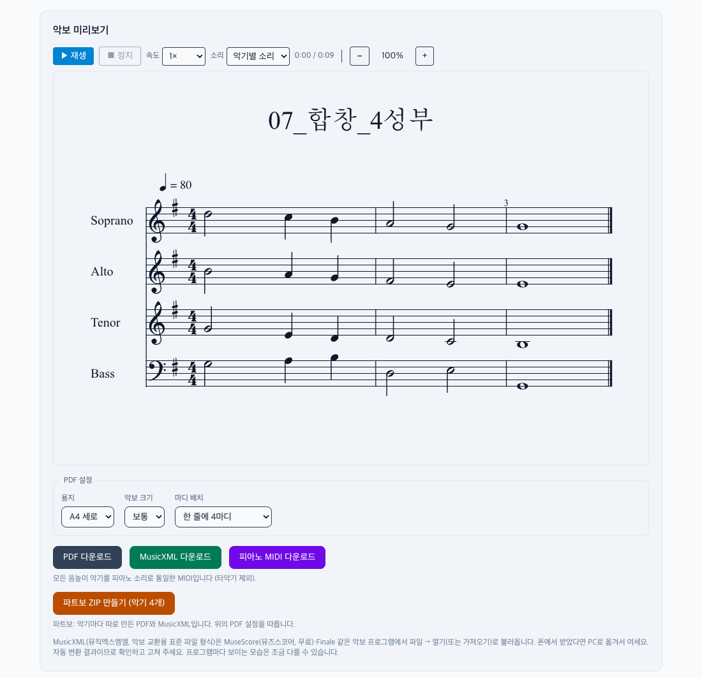

SoundStaff – MIDI·음원을 악보로
MIDI 파일이나 음원을 악보(PDF)와 MusicXML로 바꿔 주는 무료 웹앱이에요.
새 창으로 열립니다. 설치나 회원가입은 필요 없어요.
무엇을 하는 앱인가요
MIDI 파일을 끌어다 놓으면 바로 악보로 바꿔 줘요. 악기별로 악보를 나누고, 박자·조성·템포를 고칠 수 있고, 만든 악보를 재생해서 들어 볼 수 있어요. 결과는 PDF와 MusicXML(뮤직엑스엠엘, 악보 프로그램끼리 주고받는 표준 파일)로 저장하고, Finale(피날레) 같은 악보 편집 프로그램에서 열어 고쳐 쓸 수 있어요.
PC에서는 음원(mp3, wav 등)도 올릴 수 있어요. 소리에서 음을 찾아 악보 초안을 만들어 줍니다. 아래 "음원은 어디까지 맞나요"를 꼭 읽어 주세요.
- 파일은 서버로 전송되지 않고 내 컴퓨터(브라우저) 안에서만 처리돼요.
- 무료이고 광고가 없으며, MIT 라이선스로 소스를 공개했어요.
사용 방법
1. 파일 올리기
MIDI 파일(.mid, .midi)을 끌어다 놓거나 [파일 선택]을 눌러요. 음원 분석은 오른쪽 카드에서 하며 PC에서만 쓸 수 있어요.

2. 악보 다듬기 (선택)
읽은 곡의 템포·박자·조성이 보여요. 제목과 작곡자를 적고, 악기 순서를 바꾸거나 소리를 끄거나 악보에서 뺄 수 있어요. 바꾸면 악보가 바로 다시 만들어집니다.

3. 확인하고 저장
악보를 재생해 들어 보고 확대·축소해서 확인한 뒤, PDF·MusicXML·피아노 MIDI로 저장해요.

4. Finale에서 열기
PC의 Finale에서 저장한 MusicXML 파일을 열고, 다른 이름으로 저장하면 Finale 파일(.musx)이 돼요. Finale는 PC에서만 열 수 있으니 폰에서 받았다면 파일을 PC로 옮겨 주세요.
음원은 어디까지 맞나요
MIDI는 음 정보가 이미 들어 있어서 악보로 옮기기 쉽지만, 음원은 소리만으로 음을 찾아야 해서 곡에 따라 결과가 크게 달라요. 직접 만든 시험곡으로 본 경향은 아래와 같아요(정확한 수치가 아니라 경향이고, 실제 곡은 이보다 낮을 수 있어요).
- 잘 맞음: 피아노처럼 악기 하나로 연주한 한 줄 선율(보컬만 분리한 파일 포함)
- 보통: 양손 피아노·합창처럼 음이 여러 개 겹치는 곡. 놓치거나 없는 음이 몇 개 섞여요.
- 초안용: 여러 악기가 섞인 곡. 음이 많이 틀리니 [멜로디만]으로 바꾸거나 MIDI를 쓰세요.
이런 분께 맞습니다
- MIDI로 만든 곡을 악보로 뽑아 Finale에서 편집하려는 분
- 악기 하나로 연주한 음원의 선율을 악보 초안으로 만들고 싶은 분
- 파일을 외부 서버에 올리고 싶지 않은 분
알아 두실 점
- 자동 변환 결과는 정확하지 않을 수 있어요. 악보 편집 프로그램에서 확인하고 고쳐 주세요.
- 사용 권한이 있는 파일만 올려 주세요. 무료 요금제로 만든 곡은 비상업적 용도로만 쓸 수 있는 경우가 있어요.
- 폰·태블릿에서는 MIDI 변환만 쓸 수 있고, 음원 분석은 PC에서 이용해 주세요.
- 음원 분석은 악기를 구분하지 못해요.